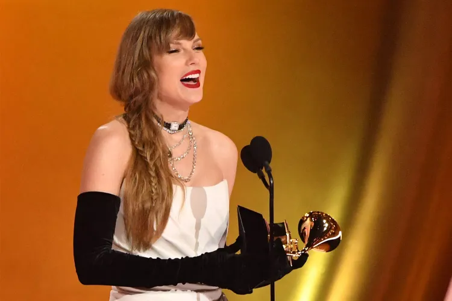

By Daniela Avila and Kelly Wynne
Taylor Swift was awarded album of the year at Sunday's awards show in Los Angeles for her album Midnights, making her the only artist to ever win album of the year four times. Midnights, Fearless, 1989 and Folklore have all won the achievement.
In her acceptance speech, Swift spoke of her love for the music industry.
"I would love to tell you that this is the best moment in my life. But I feel this happy when I've finished a song or when I've cracked the code to a bridge that I love or when I'm shot listing a music video, or when I'm rehearsing with my dancers or my band or getting ready to go to Tokyo to play a show," she said, teasing the 2024 start of The Eras Tour next week.
"For me, the award is the work. All I want to do is keep being able to do this. I love it so much. It makes me so happy. It makes me unbelievably blown away that it makes some people happy who voted for this award too. All I want to do is keep doing this. So thank you so much for giving me the opportunity to do what I love so much," Swift concluded.
The 14-time Grammy winner also took a moment to praise her friends Jack Antonoff and Lana Del Rey. "I get to work with one of my best friends who is not only one of my best friends but also a once-in-a-generation producer. That's Jack Antonoff. I'm so lucky," she began.
RELATED: Grammys 2024 Nominations: SZA, Phoebe Bridgers, Taylor Swift Among Top Noms — See the Full List